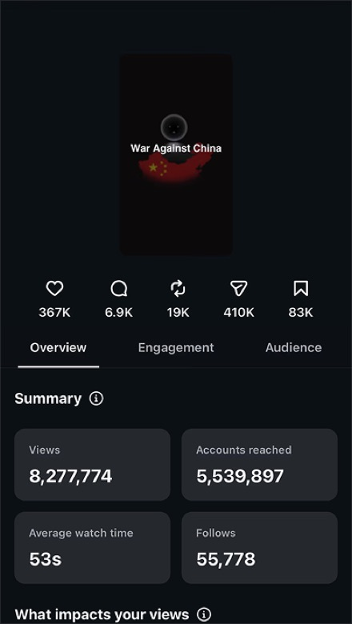
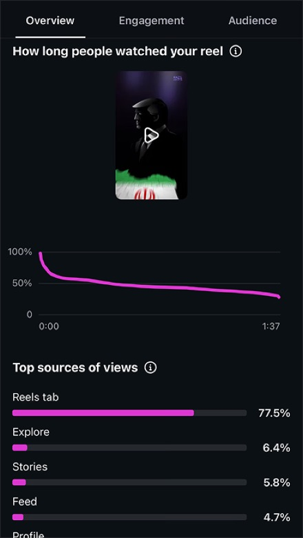
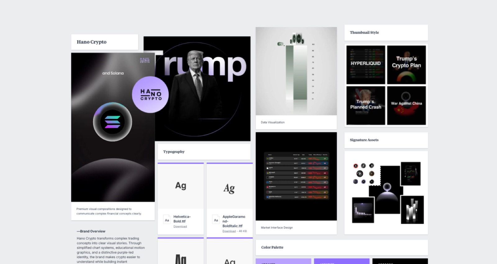

Hano Crypto — 0 to 148,000 followers and 30M+ views
From zero to 148,000 followers. 30 million views. One of the largest crypto communities on Instagram.
Overview
Hano Crypto is an edutainment brand focused on making cryptocurrency accessible to a broad audience. The brand was built from zero over the course of 18 months through a content system developed entirely by Hano Animations, making it both the longest running and most comprehensive project in our portfolio.
It is also the only case study in our portfolio that is our own brand, which means every technique, formula, and strategy described here was developed, tested, and refined with full creative control and no external limitations.
The Results In Numbers
- 200+
- Videos produced
- 148k
- Instagram followers
- 30M+
- Total views
- 100%
- Organic content reach
All of this was achieved through organic content. No paid ads. No giveaway campaigns. No influencer partnerships.
The Problem With Crypto Content
The majority of crypto content on social media falls into two categories: price speculation and unsupported hype. Accounts either post charts with bold predictions, or they pump tokens with no context, no education, and no real value for the viewer. This type of content attracts a narrow audience of people who already trade and already have opinions. It repels everyone else.
The opportunity was clear. There was no major brand on Instagram that could take complex crypto topics and present them in a way that both experienced traders and complete beginners could engage with equally. Content that gives real value to both at the same time. That required a fundamentally different approach to scripting, visuals, and topic selection.
War against China
8 Million views · 354,000 likes · 6,715 comments · 402,000 shares
The One Minute Storytelling Format
Most crypto Reels at the time were 15 to 30 seconds. Quick charts, quick opinions, quick speculation. Hano Crypto went the opposite direction and developed a one minute storytelling format that became one of the most replicated content formats in the crypto space on Instagram.
The reasoning was simple. In order for viewers to truly understand a crypto project, a market event, or a use case, the content needs enough time to frame the topic into today's relevance, explain what it actually is in plain terms, and show why it matters to the average person and investor. You cannot do that in 15 seconds.
One minute Reels were considered risky at the time because conventional wisdom said shorter performs better. But watch time, not view count, is what the Instagram algorithm rewards. A one minute video with high retention outperforms a 15 second video with high views every time. The data proved this consistently across hundreds of videos.
This format became the standard approach. It was eventually adopted by dozens of crypto pages across Instagram, many of which explicitly modeled their content after Hano Crypto. The format remains relevant and effective today.
Topic Selection and Crypto Expertise
Choosing the right topic is as important as the script itself. Hano Crypto operates with over six years of active crypto market experience, which provides a deep understanding of not only what people currently care about, but what they don't know about yet but will care about once it's framed correctly.
This is a critical distinction. Reactive content (reporting on what already happened) competes with every other account. Proactive content (identifying emerging topics before they peak) captures attention first and positions the brand as a source, not an echo.
Topic selection follows a daily research process that monitors price movements, narrative shifts across crypto Twitter, Reddit, and Telegram, regulatory developments, and on chain data. From this, topics are scored based on two criteria: viral potential on Instagram and educational value for the viewer. A topic must score high on both to make it into production.
Trump's Planned Crash
900k views · 46,500 likes · 1,170 comments
The Scripting Formula
The scripting system behind Hano Crypto is the result of hundreds of iterations across 200+ videos. Every script follows a five step structure that was refined continuously based on performance data.
The formula is engineered to accomplish three things: make the viewer curious within the first three seconds, deliver information in a way that builds understanding progressively throughout the video, and leave the viewer with a clear takeaway and a high converting CTA that fits the specific content of that video.
Each of the five steps serves a specific function in the viewer's psychological journey from curiosity to understanding to action. The structure is rigid enough to be repeatable across any crypto topic, but flexible enough to adapt to news, education, price analysis, or project breakdowns.
The specific formula remains proprietary and is exclusively available to clients working with Hano Animations.
Retention Engineering
Keeping a viewer engaged for a full minute on a Reel is one of the hardest challenges in social media content. Most viewers drop off within the first five seconds. Getting them to stay for 60 seconds requires deliberate, engineered retention techniques placed throughout the video. Hano Crypto developed a set of crypto specific and trading specific retention hooks that are placed at strategic points throughout each video, up to three times per video. These rehooks are designed to reignite curiosity, introduce a new angle, or create a micro cliffhanger that makes the viewer want to see the next sentence.
The key to effective retention hooks is subtlety. The viewer should never feel manipulated or notice the technique. When done correctly, the video simply feels engaging from start to finish, and the viewer watches the entire thing without consciously deciding to do so.
This is what separates content that gets views from content that gets viral reach. Average watch time is the single most important metric for Instagram's algorithm. A video with high average watch time gets pushed to explore, gets pushed to non followers, and compounds in reach over days and weeks.
The most viral Hano Crypto video is the clearest proof of this system working at its peak. 8,000,000 views with an average watch time of nearly one minute. That equals over 15 years of cumulative watch time from a single piece of content. The video combined perfect timing, a topic at peak relevance, a script that followed every step of the formula, and animations that matched the pacing precisely. It resulted in over 50,000 new followers from one video alone.


Visual Systems
The visual identity of Hano Crypto was developed to solve a specific problem: how to depict charts, trading data, and technical concepts in a way that everyone can understand, regardless of their experience level.
Traditional trading content uses raw chart screenshots, complex indicators, and dense data overlays that alienate casual viewers. Hano Crypto's approach redesigns this information visually, using simplified chart representations, clean data visualizations, and animated transitions that guide the viewer's eye through the information step by step.
The color palette is deliberately understated. Low key tones with purple as the primary accent color. Purple was chosen specifically for its psychological associations with trust, authority, wisdom, and wealth. In the context of financial content, purple communicates credibility and premium quality without the aggressive energy of red and green that dominates most trading content. It positions the brand as educational and trustworthy rather than speculative and hype driven.
Every visual element follows a consistency system that makes Hano Crypto content instantly recognizable in the feed. A viewer scrolling through explore should be able to identify a Hano Crypto video before reading the caption or seeing the account name. This brand recognition compounds over time and is one of the primary drivers of organic follower growth.
Hano Crypto Mood Board
Visual style guides, asset palettes, and motion references for the Hano Crypto visual system.

Market Impact and Copycats
Since Hano Crypto established its position, the format, style, and approach have been widely replicated across the crypto content space on Instagram. Multiple accounts have launched with explicit intent to copy the one minute storytelling format, the visual style, and the educational framing.
The majority of these accounts eventually stalled or failed. The reason is consistent: replicating the surface level format without the underlying crypto expertise, scripting formula, and retention engineering produces content that looks similar but doesn't perform.
The accounts and brands that did succeed in this space are, in several cases, direct clients of Hano Animations who worked with the team to build their own version of the system, adapted to their specific niche and audience. These collaborations led to significant growth in both awareness and monetization for the respective brands.
The Market Opportunity
The market for trading and crypto related video content on Instagram and social media broadly is massive and continues to grow. As crypto adoption increases globally and platforms like Instagram continue to prioritize short form video, the demand for high quality, educational crypto content is accelerating.
Hano Crypto's position as one of the largest and most engaged crypto communities on Instagram, built entirely through organic content, demonstrates what is possible when the right system is applied consistently. No account that attempted to replicate this approach has surpassed the original.